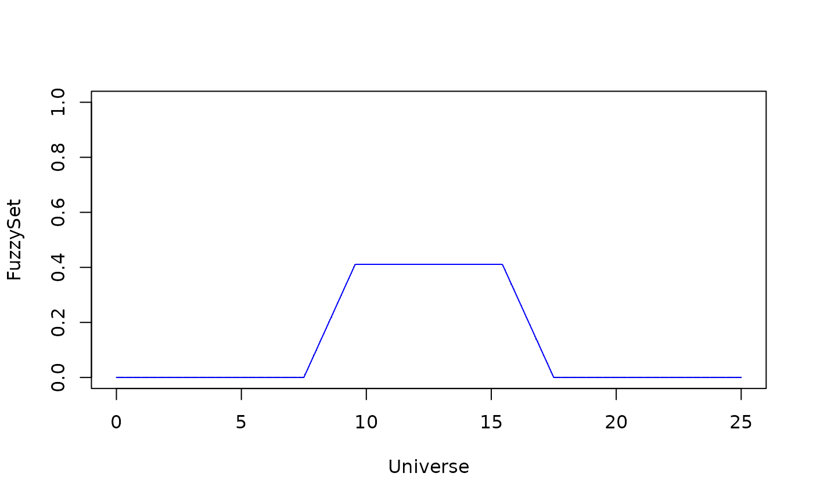
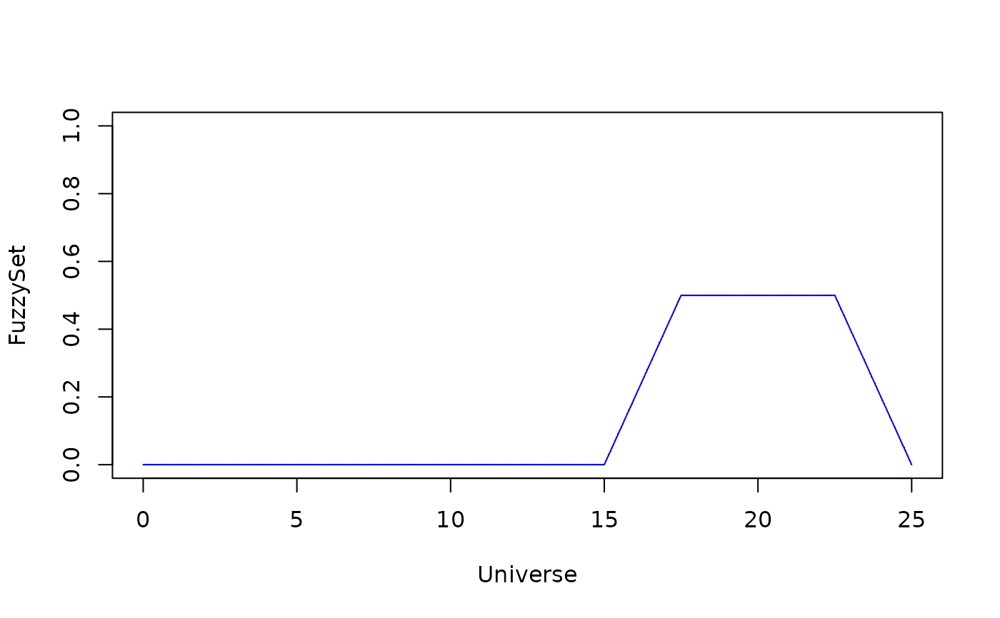
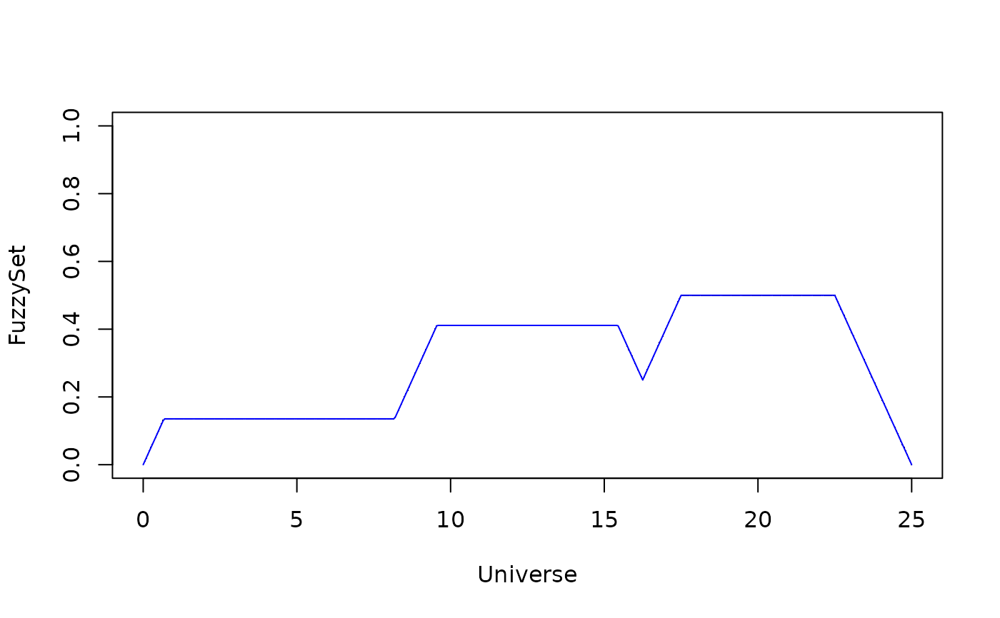

FuzzyRuleBasedSystem Fuzzy Rule-based System
Usage
Set.Universe(minX, maxX)
TriFS(U, a, b, c)
TraFS(U, a, b, c, d)
GauFS(U, m, s)
uniFS(U, FS, FS1, FS2)
compFS(U, FS)
dmFS(x, U, FS)
centroidFS(U, FS)
OR(FRBS, x, y)
AND(FRBS, x, y)
NOT(FRBS, x)
Implication(FRBS, x, U, FS)
Aggregation(FRBS, U, Lst)
plotFS(Universe, FS)References
Moraes RM, Rodrigues AKG, Soares EAMG, Machado LS (2020). “A new fuzzy beta naive Bayes classifier.” In Developments of Artificial Intelligence Technologies in Computation and Robotics: Proceedings of the 14th International FLINS Conference (FLINS 2020), 437--445. World Scientific.
Examples
## Creating Fuzzy Variables and Fuzzy Partitions
## Example 1 - It is the same of the R-Package 'Sets'
## Creating Fuzzy Variables and Fuzzy Partitions
## Example is the same of the R-Package 'Sets'
## One Domain was used for Evaluation and Tip
## Universe X - evaluation by the consumer in [0,10]
minX = 0
maxX = 25
X <- Set.Universe(minX, maxX)
FRBS = "Mandani"
## Service
service.poor <- GauFS(X, 0.0, 1.5)
#plotFS(X,service.poor)
service.good <- GauFS(X, 5.0, 1.5)
#plotFS(X,service.good)
service.excelent <- GauFS(X, 10, 1.5)
#plotFS(X,service.excelent)
## Food
food.rancid <- TraFS(X, 0, 0, 2, 4)
#plotFS(X,food.rancid)
food.delicious <- TraFS(X, 7, 9, 10, 10)
#plotFS(X,food.delicious)
## Tip
tip.cheap <- TriFS(X, 0, 5, 10)
#plotFS(X,tip.cheap)
tip.average <- TriFS(X, 7.5, 12.5, 17.5)
#plotFS(X,tip.average)
tip.generous <- TriFS(X, 15, 20, 25)
#plotFS(X,tip.generous)
## Set the input
## Evaluation by the consumer (Facts)
service = 3
food = 8
## Rules -- Specify rules and add outputs in a list
## A list is created in order to store the output of each rule
## Out_Rules_Lst <- list()
## 1) IF service is poor OR food is rancid THEN tip is cheap
## antecedent of the rule
## temp <- NOT(FRBS, dmFS(service,X,service.poor))
temp <- OR(FRBS, dmFS(service,X,service.poor), dmFS(food,X,food.rancid))
# consequent of the rule
fr1 <- Implication(FRBS, temp, X, tip.cheap)
plotFS(X,fr1)
## 2) IF service is good THEN tip is average
## temp <- NOT(FRBS, dmFS(service,X,service.good))
temp <- dmFS(service,X,service.good)
fr2 <- Implication(FRBS, temp, X, tip.average)
plotFS(X,fr2)

## Cria lista com as saidas. Precisa de duas para dar certo
Out_Rules_Lst <- list(fr1,fr2)
## 3) IF service is excelent OR food is delicious THEN tip is generous
## temp <- NOT(OR(FRBS, dmFS(service,X,service.excelent), dmFS(food,X,food.delicious)))
temp <- OR(FRBS, dmFS(service,X,service.excelent), dmFS(food,X,food.delicious))
fr3 <- Implication(FRBS, temp, X, tip.generous)
plotFS(X,fr3)

## Cria uma nova lista com a saída. Agora é possível concatenar as listas
lst_aux <- list(fr3)
## Compute the agregation of all previous Rules
## Concatenando as listas
Out_Rules_Lst <- c(Out_Rules_Lst, lst_aux)
## Numero de regras eh o comprimento da lista
length(Out_Rules_Lst)
#> [1] 3
OutFS <-Aggregation(FRBS, X, Out_Rules_Lst)
plotFS(X,OutFS)

## Compute centroid in order provide final decision
FinalDecision <- centroidFS(X,OutFS)
FinalDecision
#> [1] 14.8859